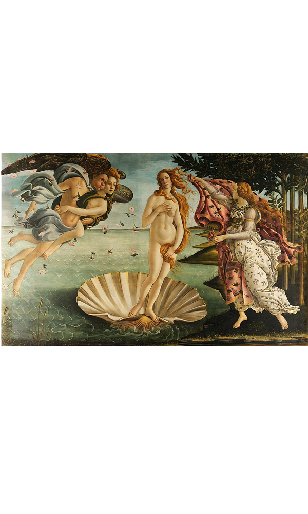

<div class="detail_content">
	<div class="img_book">
		
	</div>
	<section class="book_description">
		<h4>비너스의 탄생</h4>
		<ul class="bullet_list">
			<li><em>화가 </em> 산드로 보티첼리</li>
			<li><em>제작 시기 </em> 1485-1486</li>
			<li><em>특징 </em> 부드러운 곡선</li>
			<li><em>I S B N </em> 979-11-87370-88-8 13000</li>
			<li><em>정가 </em> 20,000 원</li>
			<li><em>상태 </em>판매중</li>
		</ul>
		<p class="point_text">
			<strong>장식적 구도 속 세계</strong>
			<br>사실주의 무시, 양식화된 표현 보티첼리 최고의 걸작
		</p>
		
	</section>
</div>